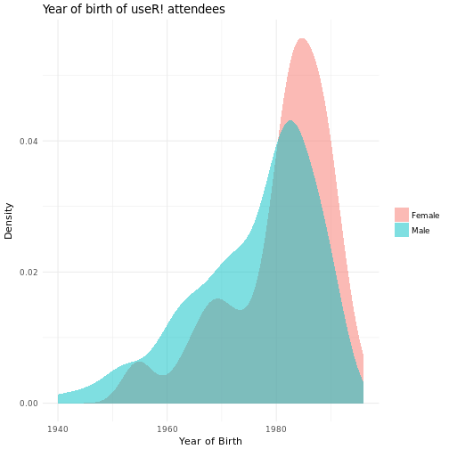

Non-response in useR! 2016 Survey
Background
The useR! survey received a total of 455 responses out of 904 attendees. Anticipating a high proportion of non-response, questions were included in the survey on participants’ gender, registration type and country of residence, with a view to adjusting observed counts in each cross-classified group to match the proportions in the total useR! 2016 population. Unfortunately the country of residence was not recorded during registration and could not be reliably derived from available information such as affiliation. Although registration type should have been available, in practice it was missing for about one third of participants. This leaves gender, which was (self-)recorded for presenters, but not for other attendees. In order to obtain a gender assignment for all participants, the first names were analysed with the genderizer package, which predicts gender from first name, based on profiles scraped from the web. For participants where the gender was unknown, the genderizer prediction was used if it was based on a sample > 10 and had probability > 0.9, otherwise the gender was assigned based on a manual web search, where this led to a clear assignment. This gave estimates of 235 female, 593 male and 76 undetermined.
Assuming that the gender distribution is similar in the undetermined group, the survey population overrepresents female attendees by about 10%:
| Gender | Survey Percentage | Attendee Percentage |
|---|---|---|
| Female | 37.31 | 28.38 |
| Male | 62.47 | 71.62 |
| Non-Binary | 0.22 | NA |
(The assumption that the undetermined have a similar gender distribution seems reasonable, as similar estimates of attendee breakdown were obtained based on genderizer results only, where there were 52.17% undetermined). This over-representation of females is a common phenomenon in surveys and particularly unsurprising here as females may be more motivated to respond to a survey run by the Women in R taskforce.
Adjusting for non-response
In order to adjust for the difference in gender balance between the sample and the full population, weights may be computed for males and females so that the ratio of females to males based on adjusted counts (sum of weights in each category) is equal to that estimated for the full sample. Specifically, the weight for females is 0.76 and the weight for males is 1.14.
These weights can then be used in further analysis, for example when tabulating by another survey variable. Here we will consider a few examples for illustration.
Age
The unweighted and weighted densities have a very similar shape, but using the weighting shifts the density slightly to the left, i.e. when females are down-weighted there is a slight shift to a generally older population.

Education level
Here there is very little difference between the unweighted and weighted counts.
| Q7 | Count | Adj.Count |
|---|---|---|
| Professional degree or certification | 10 | 10.67 |
| Doctorate | 199 | 200.69 |
| Masters degree | 187 | 186.06 |
| Undergraduate degree | 52 | 50.63 |
| High school/Secondary school or lower | 3 | 3.05 |
| NA | 7 | 6.90 |
Employment status
Again the differences between unweighted and weighted counts are small here, however there is a consistent shift from less financially secure positions (student, unemployed and employed non-permenantly in academia) to more financially secure positions (employed permenantly in academia, employed in industry). This tallies with the younger distribution of females noted above.
| Q8 | Count | Adj.Count |
|---|---|---|
| Employed in industry | 183 | 186.24 |
| Employed permanently in academia | 76 | 78.08 |
| Employed non-permanently in academia | 59 | 57.10 |
| Employed in government/non-profit | 70 | 69.54 |
| Self-employed | 6 | 6.48 |
| Retired | 2 | 2.29 |
| Student | 44 | 40.71 |
| Unemployed | 4 | 3.42 |
| NA | 14 | 14.14 |
Time using R
With the weighted counts we see a slight shift towards greater experience; this again tallies with females being generally younger and less advanced in their careers.
| Q11 | Count | Adj.Count |
|---|---|---|
| > 10 years | 119 | 123.28 |
| 5-10 years | 132 | 132.38 |
| 2-5 years | 118 | 118.05 |
| 1-2 years | 35 | 31.57 |
| 6-12 months | 29 | 28.17 |
| < 6 months | 9 | 8.76 |
| NA | 16 | 15.80 |
Recreational use of R
With the weighted counts we see a shift towards using R for recreational activity alone or as well as for work. Since the weighting down-weights females relative to males this suggests males are more able or more willing to use R for fun.
| Q14 | Count | Adj.Count |
|---|---|---|
| For both recreational and job/educational purposes. | 160 | 169.41 |
| Primarily as a recreational activity, in your free time; | 4 | 4.58 |
| Primarily as part of a job or educational course; | 275 | 265.55 |
| NA | 19 | 18.46 |
Summary
The examples above illustrate that the difference between unweighted and weighted counts tends to be small and is unlikely to affect conclusions drawn about the distribution of a particular variable in the useR! population as a whole.
Where there is a material difference between unweighted and weighted counts, this can be attributed to gender, since the weighting only depends on this factor. In this case it would be more interesting to explore the gender difference by showing a summary grouped by gender and then the weighting becomes irrelevant as we are no longer trying to represent the whole population.
Summarising by gender will necessarily exclude individuals that are non-binary or have not stated their gender. In addition, summarising by gender can result in (more) categories containing only a few individuals, which is undesirable as we wish to protect anonymity. Therefore a grouped summary should only be used when there is a substantive gender difference and small groups can be combined without too much loss of information. First considering the unweighted and weighted counts can help in making this judgement. Using the weights in this exploratory way is perhaps more appropriate than using them to adjust the counts, given that they are based in part on predicted data.
Grouped Summaries
Here we show how the conclusions of the previous section might be applied to our illustrative questions.
Age
The difference in density between weighted and unweighted is small but consistent across a wide age range so deserves further exploration. Since we are using a density summary there is no issue with small sub-groups.
Breaking down by gender shows the difference in age distribution much more clearly:

Education level
Although there is some evidence of a more educated male population (weighted counts shift to higher education levels) the difference is small. In addition the numbers without university-level education are very small and even combined with the missing group there is potential that individuals are identified when broken down by gender. Therefore it is best to keep genders combined here and base the final summary on unweighted counts.

Employment status
Here the shift from unweighted counts to weighted counts is larger. Although there are small groups, these can reasonably be combined into an “Other” category.

Time using R
Again there are material differences between unweighted and weighted counts, here the original groups can be left as is:

Recreational use of R
Here there is a clear difference between unweighted and weighted counts. As only four people (men) said that they used R primarily as a recreational activity, this can be combined with the missing category:

Conclusions
Where there is no material difference between genders, the over-representation of women in the sample is unimportant. Where there is a substantive difference, it is interesting to explore this difference in a grouped summary, where again the over-representation of women becomes irrelevant as males and females are summarised separately.
Therefore rather than base final summaries on weighted counts, which are based in part on predicted data, it is better to use the weighted counts as a guide to when a grouped summary is appropriate.